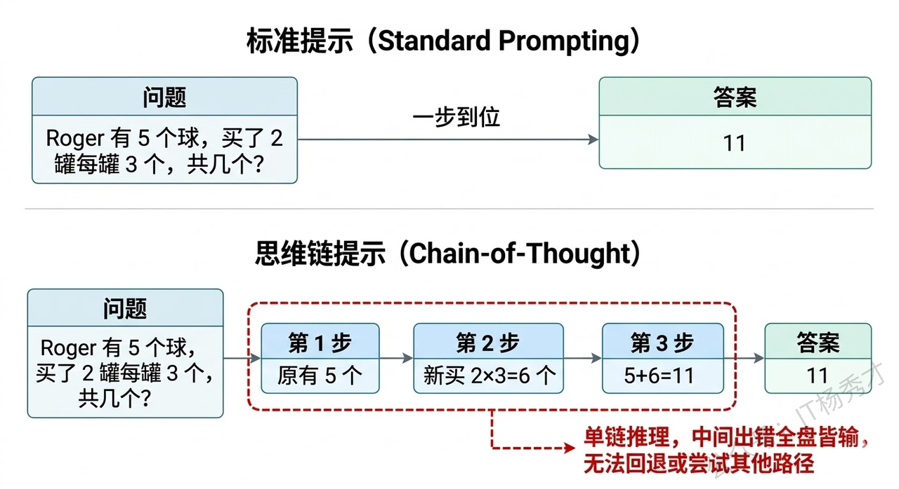
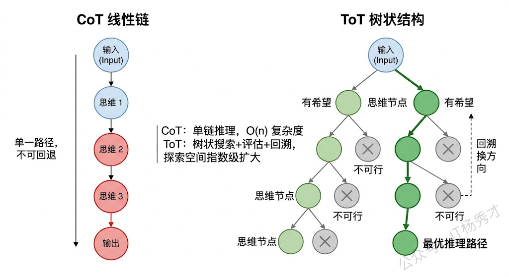
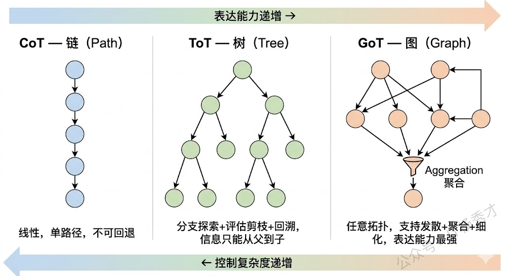
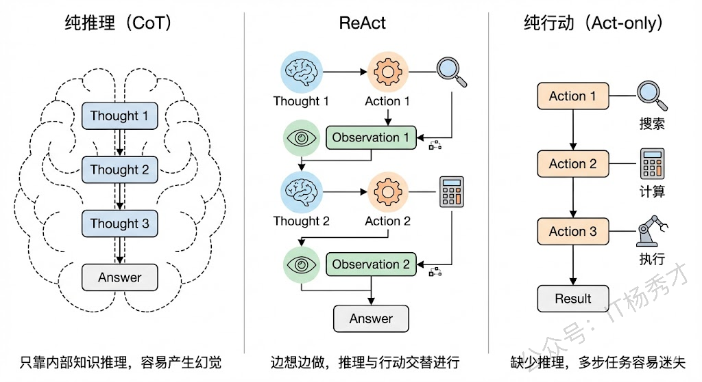
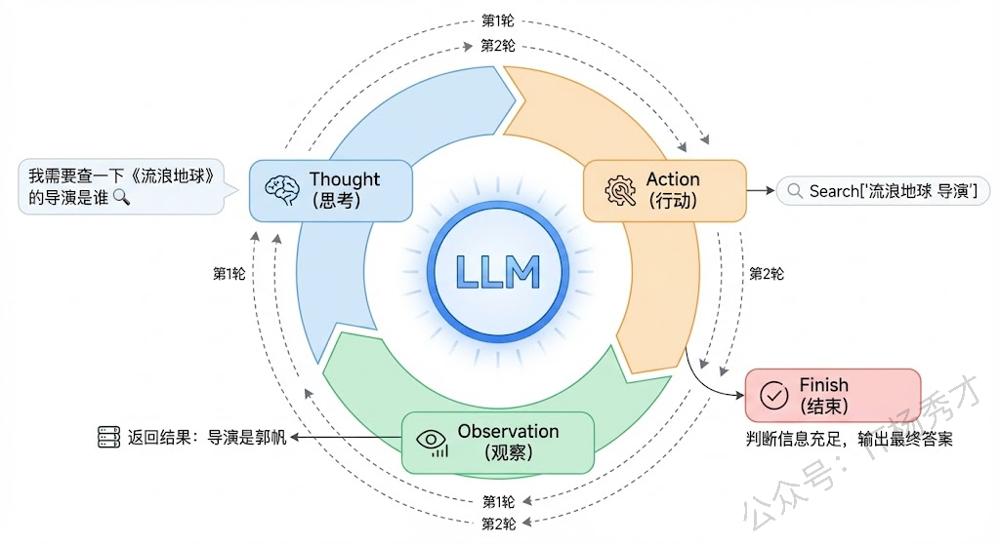
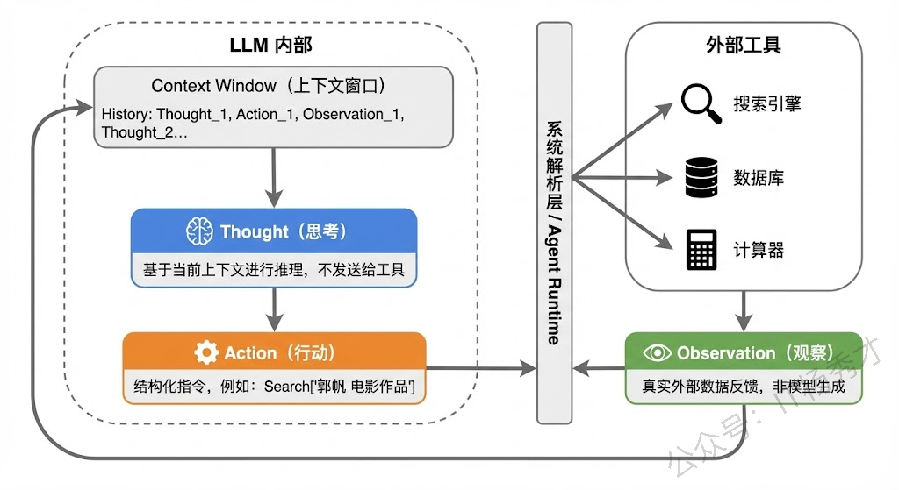
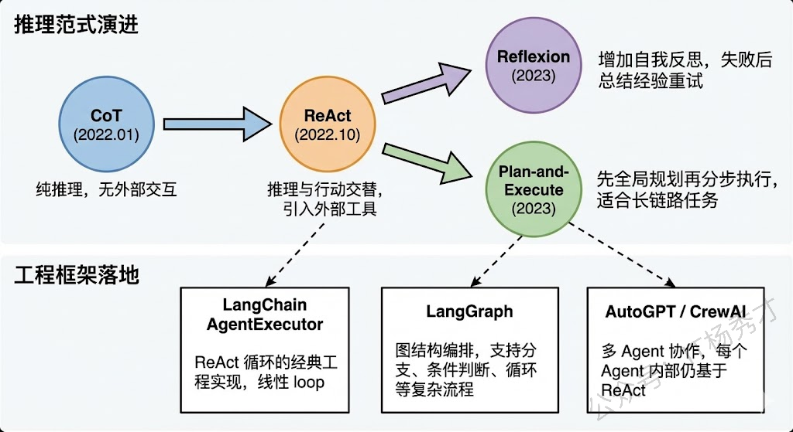
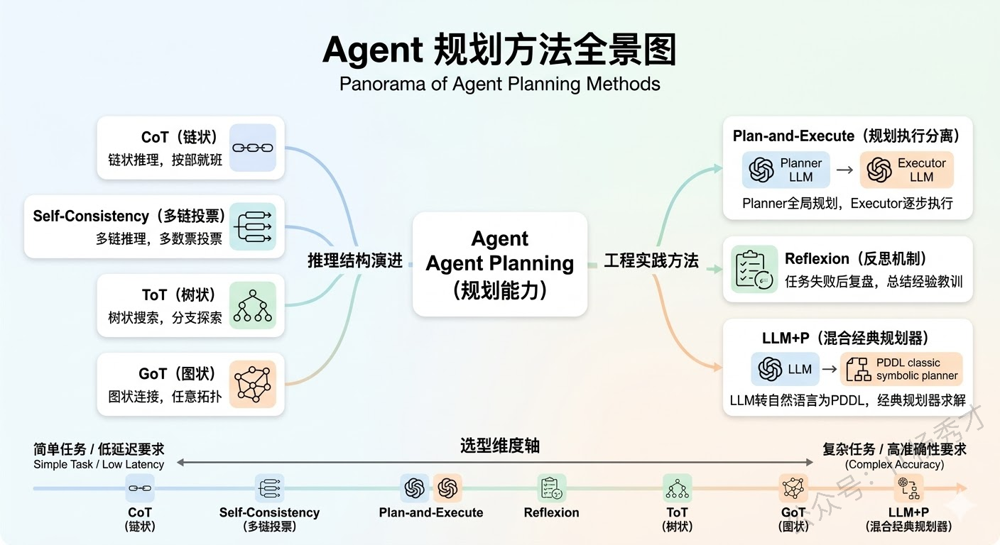

🧠 为什么规划能力是Agent的核心
在聊具体方法之前，我们先要理解"规划"在Agent体系中扮演的角色。一个完整的Agent通常包含四大能力模块：感知（Perception）、规划（Planning）、记忆（Memory）和行动（Action）。其中规划是真正的"大脑"，它决定了Agent面对一个复杂任务时，应该把任务拆解成哪些子步骤、以什么顺序执行、遇到问题时怎么调整策略。
如果没有规划能力，Agent就只能做简单的"一问一答"——用户说什么它就做什么，完全不具备处理多步骤复杂任务的能力。你可以把规划能力理解为Agent和普通Chatbot之间的分水岭：Chatbot是被动应答，Agent是主动规划并执行。
而赋予LLM规划能力的核心方法，本质上都是在回答同一个问题：如何组织LLM的推理过程，使它能够系统地分解和解决复杂问题？ 不同方法的区别在于，它们对"推理过程"的结构化程度不同——从最简单的线性链条，到树状分支，再到任意图结构，复杂度逐步递增，适用场景也各不相同。
🏗️ 面向 LLM 的推理方法：让模型"更会想"
🔗 Chain-of-Thought（CoT）：线性链式推理
CoT是一切的起点，由Google在2022年的论文中正式提出。在CoT出现之前，我们让大模型回答问题的方式是"直接给答案"，也就是所谓的Standard Prompting。比如问"Roger有5个网球，又买了2罐，每罐3个，他现在有多少个？"，模型直接输出"11"。这种方式对于简单问题没问题，但遇到需要多步推理的问题就经常出错，因为模型被迫在一次前向传播中完成所有计算。
CoT的核心洞察非常简单但深刻：让模型把中间推理步骤显式地写出来。还是刚才那个问题，加上CoT之后模型会输出"Roger一开始有5个球，2罐每罐3个就是6个，5 + 6 = 11"。看起来只是多输出了几句话，但效果提升非常显著，因为每一步中间结果都变成了下一步推理的"垫脚石"，大幅降低了推理难度。
CoT有两种主要的触发方式：
- Few-shot CoT：在prompt中给几个带推理过程的示例，模型就会"模仿"这种推理风格
- Zero-shot CoT：只需要在问题后面加一句"Let’s think step by step"，模型就会自动展开推理链
这说明大模型内部其实已经具备了逐步推理的能力，CoT只是通过prompt把这个能力"激活"了。
但是CoT有一个本质局限：它的推理过程是单条链路的，线性的，不可回退的。模型从第一步开始，一步接一步地往下推，如果中间某一步推错了，后面所有步骤都会跟着错下去，没有任何"纠错"或"换条路试试"的机制。这对于只有一条正确推理路径的简单任务来说够用了，但对于有多种可能解法的复杂任务，就显得力不从心了。

🗳️ Self-Consistency：多条链路投票
在CoT的基础上，一个很自然的改进思路是：既然一条链可能走错，那我多生成几条链，最后投票选最靠谱的不就行了？ 这就是Self-Consistency方法。
Self-Consistency的做法是：对同一个问题，让模型用CoT的方式生成多条不同的推理链（通过调高temperature来引入随机性），每条链都会得出一个最终答案，然后对所有答案进行多数投票，票数最多的答案作为最终输出。
这个方法的直觉来自于人类解题的经验——如果你用三种不同的方法解一道数学题，三种方法都得到了同一个答案，那这个答案大概率是对的。Self-Consistency用统计的方式提高了推理的鲁棒性，在数学推理和常识推理任务上效果很好。
但它的局限也很明显：多条链之间是完全独立的，不会互相交流信息。也就是说，如果第一条链在某一步发现了一个关键线索，第二条链在推理过程中完全用不到这个线索。每条链都是闷头自己推，最后只是在结果层面做投票聚合。这显然是一种浪费——理想情况下，我们希望不同推理路径之间能够共享中间信息、互相启发。
🌲 Tree-of-Thought（ToT）：树状分支探索
ToT就是为了解决CoT"一条路走到黑"和Self-Consistency"多条路互不相干"这两个问题而提出的。它由Yao等人在2023年的论文中正式提出，核心思想是：把推理过程从一条链变成一棵树，在每一步都可以产生多个分支候选，然后通过评估来选择最有希望的分支继续探索，必要时还可以回溯。
具体来说，ToT的工作流程是这样的：在推理的每一步，模型会生成多个可能的"思维节点"（Thought），每个节点代表一种可能的推理方向。然后，模型会对这些候选节点进行自我评估（Self-evaluation），判断每个方向的前景如何——是"很有希望"、“还行"还是"肯定不对”。基于评估结果，系统选择最优的一个或几个节点继续往下展开，形成新的分支。如果某个分支推着推着发现走不通了，还可以回溯到之前的节点，换一个方向继续探索。
这个过程本质上就是经典算法中的搜索——你可以用BFS（广度优先搜索）来逐层展开所有可能性，也可以用DFS（深度优先搜索）来沿着一个方向深入探索、走不通再回头。ToT把LLM的推理过程变成了一个可控的搜索问题。
用一个例子来说明ToT的威力。假设我们让模型做一个"24点游戏"——给定4个数字，用加减乘除组合成24。CoT可能一条路算下去，发现算不出来就卡住了。但ToT会在每一步尝试多种运算组合，评估哪些中间结果更有可能通向24，优先探索那些有希望的分支，走不通就回退换路，直到找到答案。

🔄 Graph-of-Thought（GoT）：图结构的自由推理
如果说CoT是一条线、ToT是一棵树，那GoT就是一张任意有向图。GoT由Besta等人在2023年提出，它进一步打破了树结构的层级限制，允许推理节点之间形成更自由、更复杂的连接关系。
GoT相比ToT最关键的新增能力是思维的聚合（Aggregation）。在树结构中，信息只能从父节点流向子节点，不同分支之间是隔离的。但在很多实际推理场景中，我们需要把多个分支的中间结论汇总合并成一个新的结论——这就要求不同分支之间能够"连线"。GoT通过引入聚合操作，允许多个思维节点的输出合并成一个新节点的输入，形成类似DAG（有向无环图）甚至包含环路的图结构。
举个例子：假设你要分析一篇长文档的核心观点。你可以先用不同的分支分别提取各段落的关键信息（这是ToT也能做的"发散"），然后把各段落的关键信息聚合成一个全局摘要（这是GoT独有的"收敛"），最后基于全局摘要再进一步推理。这种"先发散再收敛"的模式在树结构中是做不到的。
从图论的角度来看，CoT是一条路径（Path），ToT是一棵树（Tree），GoT是一张图（Graph）。路径是树的特例，树是图的特例，所以GoT在理论上的表达能力是最强的。但表达能力强也意味着搜索空间更大、控制更复杂，实际工程中需要更精细的调度策略。

⚙️ 面向 Agent 的控制策略：让系统“更会做”
除了上面这条"链→树→图"的主线是针对与大语言模型的规划增强策略，而下面几种方法是针对与Agent的规划增强策略。上面这一条“链 → 树 → 图”的演进脉络，本质上讨论的是 LLM 的推理结构。而在真实 Agent 系统中，仅仅“会想”还不够，Agent 还需要解决另一个问题：
推理、工具调用、执行、观察和修正，应该如何组织起来？
下面这些方法是面向 Agent 的规划与决策实施策略。
⚡ ReAct：边推理，边行动
ReAct是当前Agent工程里最具代表性的控制范式之一。它的全称是Reasoning + Acting，核心思想是：让大模型像人一样，边想边做。
在ReAct之前，大模型处理复杂任务主要有两条路线：一条是以CoT为代表的纯推理路线，另一条是以WebGPT、SayCan等为代表的纯行动路线。
-
纯推理路线的问题在于，模型只能依赖自身内部的参数知识来一步步推导，一旦遇到需要实时信息、精确计算或者外部数据的场景，它就容易"幻觉"——比如问"今天北京天气怎么样"，它没有联网能力，只能瞎编一个答案。
-
纯行动路线的问题则相反，模型直接映射到动作空间去执行操作，但缺少中间的推理过程，导致它不知道"为什么要做这个动作"、“做完之后下一步该怎么办”。
ReAct的核心思想非常朴素：想一步、做一步、看一步，根据每一步的反馈来调整下一步的计划。ReAct就是把这个"交替进行推理和行动"的过程形式化了。

🔄 ReAct的工作流程
ReAct的工作流程可以用一个循环来概括：Thought → Action → Observation → Thought → Action → Observation → … → Finish
我们用一个具体例子来说明。假设用户问："《流浪地球》的导演还执导过哪些电影？这些电影中评分最高的是哪一部？"
第一轮：
- Thought（思考）：我需要先查一下《流浪地球》的导演是谁。
- Action（行动）：调用搜索工具，搜索"流浪地球 导演"。
- Observation（观察）：搜索结果返回——导演是郭帆。
第二轮：
- Thought（思考）：好的，导演是郭帆。接下来我需要查一下郭帆还导演过哪些电影。
- Action（行动）：调用搜索工具，搜索"郭帆 导演 电影作品"。
- Observation（观察）：郭帆导演的电影有《流浪地球》《流浪地球2》《同桌的你》《李献计历险记》等。
第三轮：
- Thought（思考）：现在我知道了他的作品列表，接下来需要比较这些电影的评分，找出最高的。
- Action（行动）：调用搜索工具，搜索这些电影的评分信息。
- Observation（观察）：返回评分数据。
第四轮：
- Thought（思考）：根据评分数据，《流浪地球2》评分最高。我现在可以给出最终答案了。
- Action（行动）：Finish，输出最终答案。
这就是ReAct的精髓——推理指导行动，行动反馈推理，二者交替螺旋式推进，直到任务完成。

🎭 Thought、Action、Observation各自的角色
在ReAct的三元组中，每个部分承担着不同的职责：
-
Thought 是模型的"内心独白"，它不会被发送给外部工具，而是留在推理链中供模型自己参考。Thought负责分解任务、分析当前进度、决定下一步策略。可以说Thought就是CoT思维链在ReAct中的体现，它让模型的决策过程变得可解释、可追溯。
-
Action 是模型与外部世界交互的桥梁。Action通常是对某个外部工具的调用，比如搜索引擎、计算器、数据库查询、API调用等。Action的关键在于它是结构化的，通常包含工具名称和调用参数，这样系统才能解析并执行。
-
Observation 是外部环境给模型的反馈，也就是Action执行后返回的结果。Observation不是模型生成的，而是真实的外部数据，这就保证了模型的推理过程是"接地气"的，基于真实信息而非臆想。
这三者的协同关系，本质上构成了一个闭环反馈系统：Thought基于当前上下文做出判断，Action将判断转化为具体操作，Observation将操作结果反馈回来更新上下文，然后新一轮的Thought再基于更新后的上下文继续推理。

💻 ReAct与Prompt工程的关系
在实际实现中，ReAct的核心机制是通过精心设计的Prompt来驱动的。一个典型的ReAct Prompt模板大致包含以下几个部分：
|
|
通过这种Prompt模板，我们实际上是在用few-shot或instruction的方式"教会"大模型按照Thought-Action-Observation的固定格式来输出。模型生成到Action时，系统会截断模型输出、解析Action内容、调用相应工具、获取结果，然后将Observation拼接回上下文，再让模型继续生成下一轮的Thought。
这也是为什么说ReAct是一个框架而非一个模型——它是一种组织大模型推理和行动的协议和流程，可以套用在任何足够强的大模型上。
⚖️ ReAct的优势和局限
ReAct的优势主要体现在三个方面：
- 可解释性强：每一步行动之前都有明确的推理过程，出了问题可以回溯到具体是哪一步的思考出了偏差；
- 减少幻觉：通过调用外部工具获取真实数据，而不是让模型凭空编造，大大提高了事实准确性；
- 泛化能力好：同一套ReAct框架可以对接不同的工具集，适用于问答、数据分析、代码生成等多种场景。
但ReAct也有明显的局限性：
- 效率问题：每一轮Thought-Action-Observation都需要一次LLM调用加一次工具调用，对于简单任务来说开销过大；
- 错误累积：如果中间某一步的推理或工具调用出错，后续步骤可能会在错误的基础上越走越偏；
- 对模型能力的依赖：ReAct需要模型有较强的指令遵循能力和格式控制能力，弱模型很容易输出不符合格式要求的内容导致解析失败。
🔮 ReAct在现代Agent框架中的演进
现在主流的Agent框架基本都是在ReAct的基础上做了增强和扩展。
比如LangChain中的AgentExecutor就是ReAct的典型实现，它的Agent循环本质就是不断地让LLM生成Thought和Action，然后执行工具获取Observation，直到LLM输出Final Answer。
更新的框架像LangGraph，它把ReAct的线性循环扩展成了图结构，允许更复杂的分支和条件跳转，但底层的Thought-Action-Observation三元组逻辑依然没变。
另外还有一些变体值得关注：
- Reflexion在ReAct的基础上加入了自我反思机制，当任务失败时模型会回顾整个推理过程并总结经验教训，下次再遇到类似问题时可以避免犯同样的错误
- Plan-and-Execute则是先做全局规划再分步执行，适合更长链路的复杂任务

从关系上看，ReAct不是CoT、ToT的替代品，而更像是一个运行框架。它内部的"Thought"完全可以使用CoT风格来展开，因此可以把它理解成：CoT负责怎么想，ReAct负责怎么把想和做串起来。
📋 Plan-and-Execute（规划-执行分离）
这是一种偏工程实践的策略。它的思路是把规划和执行拆成两个独立阶段：先让一个"Planner LLM"对任务做全局规划，输出一个完整的步骤清单，然后让一个"Executor LLM"逐步执行每个步骤。这种方法的好处是规划阶段可以纵览全局，不会被执行过程中的细节干扰，适合那些步骤较多但逻辑相对确定的任务，比如"帮我写一篇行业分析报告"这种。LangChain和LangGraph中都有对应的Plan-and-Execute Agent实现。
🔁 Reflexion（反思机制）
则是在规划执行的基础上加入了"复盘"环节。当Agent执行一个任务失败后，它不会简单地重试，而是先回顾整个推理和执行过程，总结出"哪里做错了、下次应该怎么改进"的经验教训，然后把这些反思存入记忆，在下一次尝试中参考。Reflexion本质上赋予了Agent从失败中学习的能力，类似于人类的"吃一堑长一智"。
🤖 LLM+P（LLM + 经典规划器）
是一种混合方法，它把LLM的自然语言理解能力和经典AI规划算法（如PDDL规划器）的严格推理能力结合在一起。LLM负责把用户的自然语言需求转化为结构化的规划问题描述（PDDL格式），然后交给经典规划器去求解最优行动序列，最后LLM再把结果翻译成自然语言返回给用户。这种方法在需要严格逻辑保证的场景（比如机器人路径规划）中有独特优势。

⚖️ 工程选型的思考
在实际 Agent 开发中，不同方法并不存在绝对的优劣，关键在于任务类型、延迟预算、可解释性要求和工程复杂度。
- 如果只是大多数常见任务，CoT + ReAct 往往已经足够好用。它简单、直观、延迟较低，也是目前很多通用 Agent 的默认起点。
- 如果任务本身具有明显的多路径探索特征，例如需要试错、搜索、回退，那么 ToT 会比单链式 CoT 更有优势，因为它能够显式探索多个候选方向。
- 如果任务需要“先发散分析、再聚合结论”，例如多文档总结、多源信息融合，那么 GoT 的聚合思想会更有启发意义。尽管目前落地还不如 CoT 和 ReAct 普遍，但它代表了一种更强的推理表达能力。
- 如果任务链条较长、步骤稳定、流程相对明确，那么 Plan-and-Execute 是一种非常实用的企业级方案。它把规划和执行拆开，便于分别优化、监控和调试。
- 如果系统需要在长期运行中持续修正自身行为，那么 Reflexion 会更有价值。它的重点不是一次成功，而是越做越好。
- 如果业务场景对逻辑正确性和约束满足有极高要求，那么 LLM + P 是值得优先考虑的路线，因为它能够借助经典规划器提供更强的形式化保证。
一个非常实用的经验原则是：
先用最简单的方法跑通，再围绕瓶颈做针对性升级。
因为复杂方法带来的不仅是推理能力提升，也一定伴随着额外成本：更高的时延、更大的 token 开销、更复杂的调试过程，以及更高的系统维护门槛。
📝 总结
如果把 Agent 的规划与决策能力放在一个统一框架里看，可以得到一个比较清晰的结论：
- CoT、Self-Consistency、ToT、GoT 主要描述的是 LLM 的推理结构，解决“模型怎么想”的问题；
- ReAct、Plan-and-Execute、Reflexion、LLM + P 主要描述的是 Agent 的控制与执行方式，解决“系统怎么做”的问题。
前者偏向推理机制，后者偏向执行框架；前者回答“如何组织思维过程”，后者回答“如何组织任务过程”。两者并不是互斥关系，而是可以互相组合、上下协同。
例如，ReAct 中的 Thought 往往就可以采用 CoT 风格展开；Plan-and-Execute 中的 Planner 也完全可以借助 ToT 提升规划质量。换句话说，模型推理方法提供了 Agent 的“思考能力”，而 Agent 控制策略定义了这些能力如何被实际调度和执行。
从演进脉络来看，相关方法大致可以理解为两条并行路线：
| 类型 | 方法 | 核心特征 | 更适合的场景 |
|---|---|---|---|
| 模型推理方法 | CoT | 线性链式推理 | 简单多步问题 |
| 模型推理方法 | Self-Consistency | 多链投票，提升鲁棒性 | 数学/常识推理 |
| 模型推理方法 | ToT | 树状搜索，可回溯 | 复杂多路径任务 |
| 模型推理方法 | GoT | 图结构推理，可聚合 | 多源分析、先分后合 |
| Agent 控制策略 | ReAct | 推理与行动交替 | 工具调用、环境交互 |
| Agent 控制策略 | Plan-and-Execute | 规划执行分离 | 长链路稳定任务 |
| Agent 控制策略 | Reflexion | 基于反馈持续修正 | 长期运行、自我改进 |
| Agent 控制策略 | LLM + P | 结合经典规划器 | 强约束、强逻辑场景 |
归根结底，Agent 的规划能力并不是某一个单点技巧，而是一整套“如何让系统更会想，也更会做”的方法集合。理解这些方法之间的层级关系和适用边界，比单纯记住缩写本身更重要。